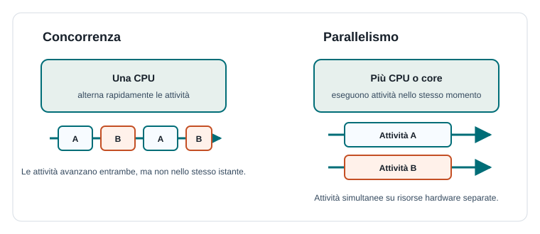

Capitoletto 1
Concorrenza e parallelismo
Un programma moderno raramente svolge una sola attività alla volta. Può leggere dati dalla rete, aggiornare l'interfaccia, scrivere su disco e rispondere all'utente. La programmazione concorrente studia come organizzare queste attività senza perdere controllo e correttezza.
Obiettivi della lezione
- Distinguere programma, processo, thread e attività.
- Capire la differenza tra concorrenza e parallelismo.
- Collegare multitasking, scheduler e context switch.
- Riconoscere quando conviene dividere un lavoro in più attività.
- Comprendere i primi rischi dei programmi concorrenti.
Programma, processo e thread
Un programma è un insieme di istruzioni salvate in un file o in memoria. Quando viene eseguito, il sistema operativo crea un processo: un programma in esecuzione con il proprio spazio di memoria, le proprie risorse e il proprio stato.
Un thread è un flusso di esecuzione interno a un processo. Più thread dello stesso processo condividono dati e risorse, ma ciascuno possiede il proprio punto di esecuzione. Questa condivisione rende i thread efficienti, ma anche delicati da coordinare.
| Concetto | Che cos'è | Esempio |
|---|---|---|
| Programma | Codice pronto per essere eseguito | Il file di un browser o di un editor. |
| Processo | Programma in esecuzione con memoria e risorse | Una finestra del browser aperta. |
| Thread | Flusso di esecuzione dentro un processo | Un thread scarica dati mentre un altro aggiorna l'interfaccia. |
Che cosa significa concorrenza
La concorrenza si ha quando più attività sono in corso nello stesso intervallo di tempo. Non significa necessariamente che stiano usando la CPU nello stesso identico istante: su una sola CPU il sistema operativo può alternarle molto rapidamente, dando l'impressione che procedano insieme.
Il passaggio da un'attività a un'altra si chiama context switch. Durante questo passaggio il sistema salva lo stato dell'attività corrente e carica lo stato di quella successiva. È indispensabile per il multitasking, ma ha un costo: se si cambia troppo spesso attività, una parte del tempo viene spesa solo per coordinare il lavoro.
Concorrenza e parallelismo a confronto

| Aspetto | Concorrenza | Parallelismo |
|---|---|---|
| Idea | Più attività avanzano nello stesso periodo. | Più attività eseguono davvero nello stesso istante. |
| Hardware | Può esistere anche con una sola CPU. | Richiede più core, CPU o unità di calcolo. |
| Obiettivo | Migliorare reattività e organizzazione. | Ridurre il tempo totale di calcolo. |
| Esempio | Un'app risponde all'utente mentre aspetta la rete. | Un programma elabora parti diverse di un'immagine su più core. |
Quando serve programmare in modo concorrente
La concorrenza è utile quando un'applicazione deve gestire più eventi indipendenti o attività con tempi di attesa diversi. Un server web deve servire molti client, un videogioco deve aggiornare input, grafica e audio, un'app mobile deve restare reattiva mentre scarica dati.
Non sempre però aggiungere thread migliora un programma. Se il problema è semplice, la concorrenza può complicare il codice senza vantaggi. Una buona progettazione valuta quali attività sono indipendenti, quali condividono dati e quali devono essere eseguite in un ordine preciso.
| Scenario | Perché la concorrenza aiuta | Rischio da controllare |
|---|---|---|
| Server web | Gestisce più richieste senza bloccare tutti gli utenti. | Accessi simultanei agli stessi dati. |
| Interfaccia grafica | Resta reattiva durante operazioni lente. | Aggiornare la UI dal thread sbagliato. |
| Download di file | Scarica più risorse o mostra progresso. | Gestione di errori, annullamenti e timeout. |
| Calcolo scientifico | Divide un lavoro grande in parti indipendenti. | Sovraccarico di coordinamento. |
Esempio guidato: laboratorio scolastico
Immagina un programma che controlla i PC di un laboratorio. Deve mostrare l'elenco dei computer, controllare quali sono accesi, ricevere messaggi dagli studenti e salvare un registro. Se facesse tutto in sequenza, un controllo lento potrebbe bloccare l'interfaccia.
Attività principale: mostra l'interfaccia al docente
Attività di rete: controlla lo stato dei PC
Attività di log: salva eventi e messaggi
Il programma è concorrente perché queste attività avanzano nello stesso periodo.
Diventa parallelo solo se il sistema le esegue davvero su core diversi.Primi rischi della concorrenza
Quando più attività avanzano in ordine non prevedibile, il risultato non dipende solo dal codice scritto, ma anche dal momento in cui ogni attività viene sospesa o ripresa. Questo rende alcuni errori difficili da riprodurre: il programma può funzionare cento volte e fallire alla centounesima.
- Race condition: il risultato dipende dall'ordine casuale degli accessi.
- Interferenza: un'attività modifica dati mentre un'altra li sta usando.
- Deadlock: più attività restano bloccate aspettandosi a vicenda.
- Starvation: un'attività non riceve mai le risorse necessarie.
Esercizi guidati
- Scrivi tre esempi di programmi che devono rimanere reattivi mentre svolgono operazioni lente.
- Spiega con parole tue la differenza tra processo e thread.
- Indica se i seguenti casi sono concorrenza, parallelismo o entrambi: download mentre scrivi un documento; rendering su otto core; server che serve più client.
- Descrivi un rischio che nasce quando due thread modificano lo stesso dato.
Domande con risposta semplice
Concorrenza e parallelismo sono la stessa cosa?
No. La concorrenza organizza più attività che avanzano nello stesso periodo; il parallelismo le esegue nello stesso istante su più unità di elaborazione.
Perché i thread sono più delicati dei processi?
Perché thread dello stesso processo condividono molti dati. Se li modificano senza coordinamento, possono produrre risultati incoerenti.
A che cosa serve il context switch?
Serve a sospendere un'attività e riprenderne un'altra, permettendo al sistema operativo di alternare più processi o thread.
Per ripassare
Ricorda la catena: programma, processo, thread, attività. Poi separa bene i concetti: la concorrenza è organizzazione temporale, il parallelismo è esecuzione simultanea.